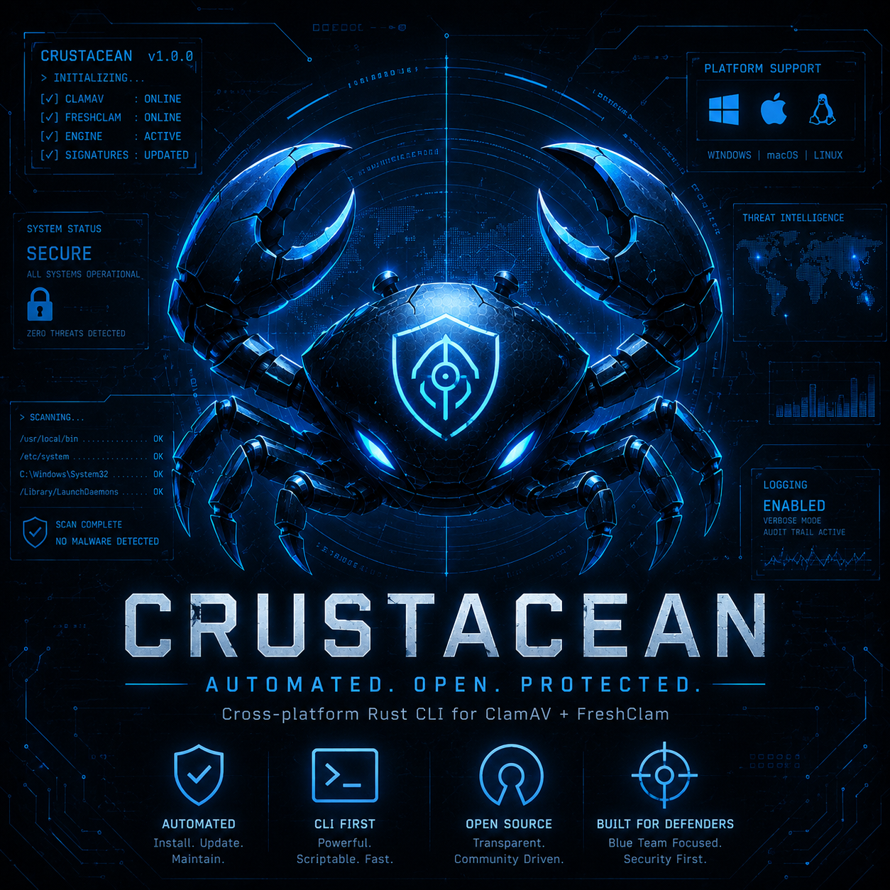

Crustacian is shifting from a local antivirus helper into an endpoint security toolkit: ClamAV lifecycle management, repeatable scans, local evidence capture, SIEM-ready telemetry, and safe response-planning stages for security teams.
Self-host it. Automate it. Build endpoint evidence into your own security workflows.
Crustacian is a Rust CLI that wraps ClamAV in a clean operational interface while laying the groundwork for endpoint detection and response research. It handles the heavy lifting:
You stay in control of your environment — Crustacian is self-hosted, local-first, and built to integrate with existing blue-team tools without enabling destructive response actions by default.
Crustacian remains local-first by default. SIEM delivery, identity response, and containment workflows are staged as explicit, auditable integrations rather than hidden background behavior.
Initialize or repair a ClamAV environment on supported platforms. Generate configs, set log paths, and keep FreshClam ready to update signatures on schedule.
Run quick, full, or custom directory scans from the interactive CLI. See infections in real time and export results for follow-up analysis or automation.
Generate NDJSON events, endpoint snapshots, SHA-256 evidence hashes, and disabled response plans for SIEM, authentik, LDAP, and containment research.
Once you’ve cloned the repository and built the project with Cargo, launch the interactive CLI to initialize ClamAV, scan endpoints, and generate local telemetry artifacts:
# Clone the repository
git clone https://github.com/CharlesDerek/crustacian.git
cd crustacian
# Build in release mode
cargo build --release# On Windows (example)
.\target\release\crustacian.exe
# On Linux / macOS
./target/release/crustacian# 1. Initialize / repair ClamAV environment
# - Install / locate ClamAV
# - Write clamd & freshclam config files
# - Run initial signature update
# 2. Run a new scan
# - Quick scan: user folders / temp
# - Full scan: whole volume
# - Custom scan: specify paths
# 3. Review history and endpoint telemetry
# - View past scan summaries
# - Inspect infection lists
# - Generate SIEM-ready local event artifacts
# - Draft disabled response plans for review